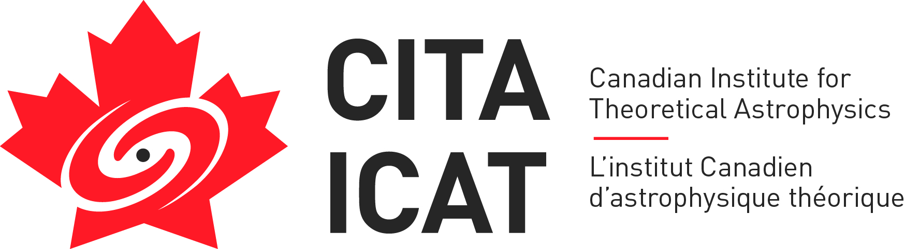
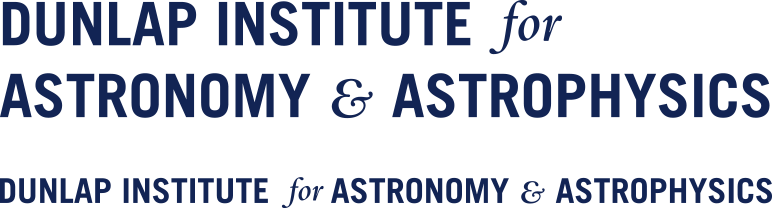
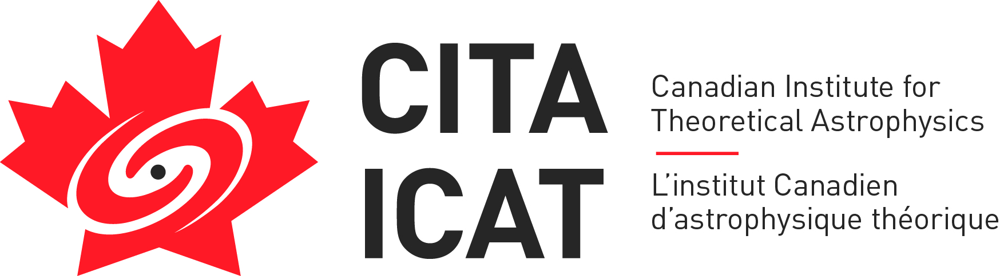
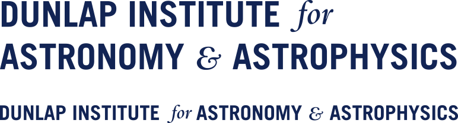

Global Radio Scintillometry Astrophysics 2018
October 22-26, 2018 Shanghai, China
 |
Scintillometry uses cosmic plasma lenses to achieve unprecedented resolving power of coherent radio emission,
including pulsars and FRBs. These sources enable a precise map of the lens structures, probe magnetic fields,
and map tiny scale structures in the interstellar medium. Low frequency VLBI has provided a new window to
quantify our understanding of these enigmatic structures, and complementary use of the lenses to study the
sources in microscopic detail.
This meeting brings together theory, data, and facilities, reviewing recent
progress, and providing an open forum for future work.
Significant time will be allocated to topical discussions.
It is recommended that participants
register early in order for LOC to provide timely assistance (e.g. invitation letter for visa) if needed.
If you have any questions, please contact
Haoran Yu (haoran_at_cita.utoronto.ca)
Registration and Abstract Submission
Registration Fee and Payment Methods
Abstract submission deadline: October 04, 2018
Registration and Payment deadline: October 11, 2018
Participant List
Key Dates and Schedule
Visa Information
Meeting Venue and Hotel Information
|
|
|
  


Links to the tourist website:
Shanghai Travel Guide Suzhou Travel Guide Hangzhou Travel Guide
|
INVITED SPEAKERS:
- Anya Bilous (University of Amsterdam) (confirmed)
- Leon Koopmans (confirmed)
- Na Wang (confirmed)
- Robert Main (confirmed)
- Jinlin Han (confirmed)
- Marten van Kerkwijk (confirmed)
- Stefan Oslowski (confirmed)
- Di Li
- Yuri Levin
- Andrew Lyne
- Norbert Bartelt
- Jim Cordes
|
3D campus view
|
SCIENTIFIC ORGANIZING COMMITTEE:
- Ue-Li Pen (CITA, Toronto, Chair)
- Viswesh Marthi (CITA, Toronto)
- Jean-Pierre Macquart (ICRAR, Perth)
- Stefan Oslowski (Swinburne, Melbourne)
- Alexey Rudnitskiy (ASC, LPI, Moscow)
- Dan Stinebring (Oberlin College)
- Na Wang (XAO, CAS, Urumqi)
- Alex Hill (DRAO, Penticton)
- Olaf Wucknitz (MPIfR, Bonn)
- Robert Main (MPIfR, Bonn)
- Kejia Li (KIAA, Beijing)
- Carl Gwinn (UCSB, California)
|
|
LOCAL ORGANIZING COMMITTEE:
- Li Fu (TDLI)
- Sheng Li (TDLI)
- Mengzhu Lu (TDLI)
- Jinghua Shi (TDLI)
- Jieshuang Wang (TDLI)
- Haoran Yu (TDLI, Chair)
- Yu Yu (SJTU)
- Pengjie Zhang (SJTU/TDLI)
- Ying Zu (SJTU)
|
=============================================================================================================================
The Global Radio Scintillometry Astrophysics 2018 is sponsored by
Shanghai Jiao Tong University,
Tsung-Dao Lee Institute,
Canadian Institute for Theoretical Astrophysics,
and Dunlap Institute for Astronomy and Astrophysics.

 



|
|